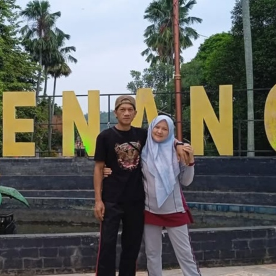
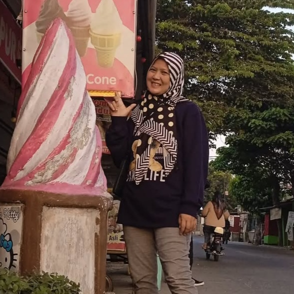
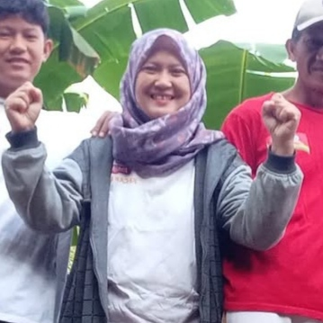

08 Mei 2025
Selamat Ulang Tahun
Selamat Ulang
Tahun
Untuk Bunda Tercinta
Buka UcapanUcapan Spesial
Semoga panjang umur, sehat selalu, dan dimudahkan segala urusannya...
08
TanggalMei
Bulan2025
TahunHari ini adalah hari istimewa bagi seseorang yang luar biasa. Terima kasih telah menjadi cahaya, cinta, dan kekuatan dalam hidup kami. Semoga semua harapan terbaik menyertaimu selalu.
Bunda Tercinta
Cinta seorang ibu adalah anugerah yang tak ternilai,
kekuatan yang tak terlihat namun mampu mengubah dunia.
Sekilas Tentang Bunda
Bunda, Sang Inspirasi
Seorang ibu luar biasa yang lahir pada tahun 1985, kini berusia 40 tahun. Bunda adalah ibu dari 4 orang anak yang selalu memberikan kasih sayang, perhatian, dan teladan yang tak ternilai.
Tahun Kelahiran
1985
Usia Saat Ini
40 Tahun
Bunda adalah sosok yang penuh cinta, yang selalu mengajarkan kita tentang arti kebersamaan, kesabaran, dan kasih yang tak terhingga. Setiap langkahnya memberi inspirasi bagi kita semua. Terima kasih Bunda, atas segala pengorbanan dan kasih sayang yang tak pernah putus.
Galeri Kenangan


